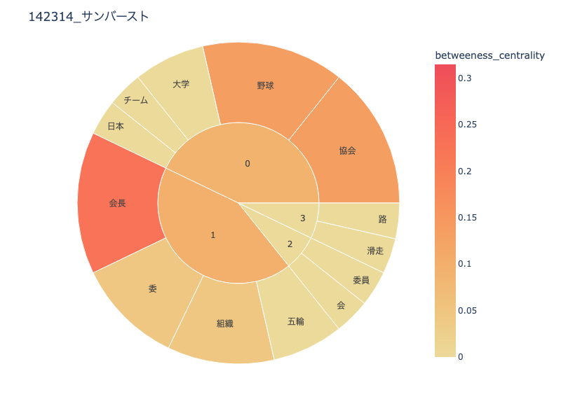
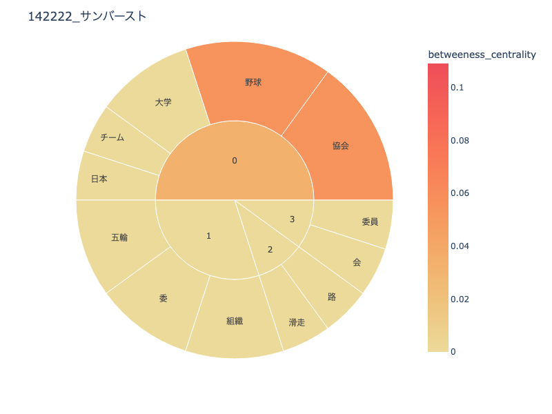
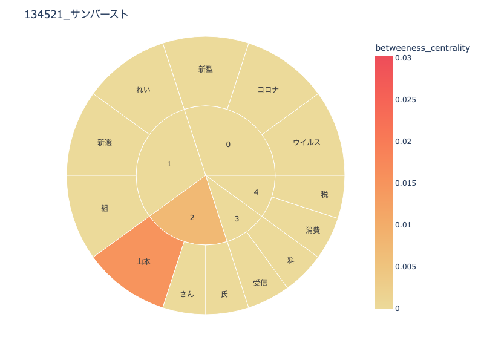
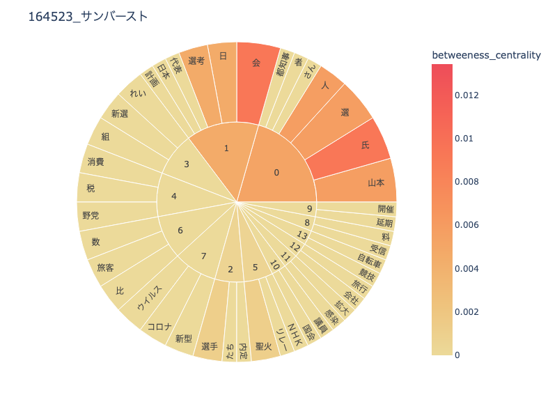

Maho 課題
データサイエンス テキストマイニング
1964年と2020年の東京オリンピック
1964年と2020年の東京オリンピックについて、関係する新聞記事を用いて
それぞれの社会の変化を研究しました
1964年開催時に関する記事について

東京オリンピックに向けて、社会が大きく発達しているようにみられる
「滑走路」というワードは、羽田空港がこの年のオリンピックまでに
新しいターミナルや滑走路を増設していたことに関係するとのことだった
また、オリンピックに向けて、野球が話題になっていたと伺える
1の分野でまとめられている「会長」「委」「組織」「組織」
はどの年度の開催でも多く使われる言葉なのではないかと予想する

初めに出力した時は、このような結果になった
パッと見では、あまり変わらないように見えるが
それぞれの分野の中身をより簡潔にして表示させたほうが見やすいと考えた
2020年開催時に関する記事について

やはり2020年は、コロナウイルスの影響で延期になったことが
どの記事をピックアップしても書かれているため
このような結果になった
また、大会開催後に発覚した様々な問題についてのワードも多く見られる
2020年に関しては、自分達にも知識があるせいか
この結果を見ただけで
だいたい選んだ記事の内容が1964年より鮮明に分かってしまうと感じた

このテキストマイキングを始めて回してみた時の結果である
これだと、ワードが細かく出過ぎてしまうので、
上記に添付した結果になるように数値を調節していった
こちらの方が出てきたワードは細かいが、
先述したように、2020年に関することは
自分達も経験していることなので、最初に添付した資料ぐらいのワード数
であっても、どのような記事があったか分かりやすい
それぞれを比較して
それぞれの結果を踏まえて、
1964年開催時は
オリンピック開催という一大行事を控え、日本全体として発展しようと
している様子が伺える
一方、2020年は新施設の話題よりも、
どの記事もコロナウイルス関係のワードが多いように感じた。
しかし、新国立競技場の建設などでも様々な話題があり、
記事を選ぶ年数の範囲が狭かったためだと考える
1964年、2020年と2度にわたって行われたオリンピックも
その時代、その時代でそれぞれの多く話題にあがる大きな出来事があったと感じた